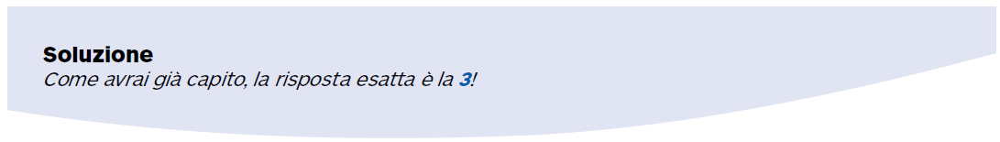

L'acqua virtuale
Esiste un'acqua nascosta nei cibi che mangiamo e negli oggetti che usiamo. Si definisce anche “impronta idrica” ed è costituita dal volume totale di acqua dolce impiegato nell'intera catena di produzione.
Le cifre sono sorprendenti: per produrre una bibita in lattina possono servirne 200 litri (la maggior parte dei quali viene usata per coltivare e raffinare lo zucchero), per una maglietta circa 2.700 litri, più di 200 litri per un cappuccino, 15.400 litri per una fiorentina!
Ti spieghiamo il perchè prendendo ad esempio la bistecca.
1. nella filiera di produzione il bovino è allevato per
tre anni
2. in tre anni consuma circa 1.300 kg di granaglie, la
cui coltivazione richiede 3.060.000 litri di acqua
3. utilizzerà inoltre circa 24.000 litri d'acqua per dissetarsi
4. 7.000 litri saranno utilizzati dagli impianti di allevamento
e macellazione
5. il totale di acqua utilizzata sarà quindi equivalente
a 3.091.000 litri per una produzione totale di
200 kg di carne, 15.400 litri circa per una bistecca
da 1 kg.

Di seguito puoi trovare altri stupefacenti esempi
1 uovo : 140 litri
1 pizza margherita : 1.260 litri
1 tazzina di caffè : 140 litri
1 bicchiere di latte : 200 litri
1 paio di scarpe : 8.000 litri
1 bottiglia di vino da 750 ml: 720 litri
1 barretta di cioccolato : 2.700 litri
1 paio di jeans : 11.000 litri
1 automobile : fino a 400.000 litri
1 smartphone : 13.000 litri
Nei paesi industrializzati, consumiamo circa 3.500 litri
di acqua (virtuale) al giorno e a persona, considerando
solo quello che mangiamo! 2.500 se siamo vegetariani,
5.000 se la nostra dieta è prevalentemente a base di carne.
È una quantità enorme, anche considerando che sul
nostro pianeta oltre 1 miliardo di persone soffrono
la sete. E le risorse idriche disponibili, a causa della
crescita della popolazione, dei cambiamenti climatici
e dell'inquinamento sono destinate a diminuire…
Proviamo a rifletterci e a valutare come modificare
i nostri consumi rendendoli più sostenibili.
